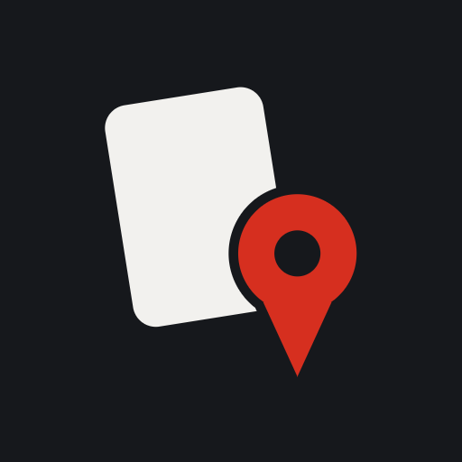

トレカ巡回
発売日の朝、どの店をどの順に回るか。
その日のうちに決めて、回りながら記録するためのアプリです。
巡回ルートを作る
回る店を選んで、指で掴んで並べ替えるだけ。番号がそのまま回る順番になります。開店時刻を入れておけば早い店から並びます。
その場で記録する
買えた数と、何時何分に何人並んでいたか。片手で終わる入力にしてあります。9時30分は「930」でも「9:30」でも通ります。
次の発売日に効く
同じ店に次の発売日で行くとき、前回そこで何が起きたかが分かります。何時に並べばよかったのか、その店は何BOX入る店なのか。
他の人の記録も見える
同じカードを追っている人の記録が、合計と中央値で見られます。誰が出した記録かは表示されません。
いま
内部テストの準備中です。Google Play にはまだ出ていません。
試してみたい方は下のアドレスまでご連絡ください。
中身
ログインはありません。氏名もメールアドレスも聞きません。
広告はありません。アプリ内課金もありません。
位置情報は近くの店を距離順に並べるために使い、店を検索したときだけ
約1km四方に丸めた位置を送ります。
詳しくはプライバシーポリシーをご覧ください。